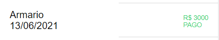

<ion-content>
  <ion-slides pager="true">
    <ion-slide>
      
      <h3>Bem vindo!</h3>
      <p>Seja bem vindo ao Dr. Cash! seu assistente financeiro virtual.</p>
    </ion-slide>
    <ion-slide>
      
      <h3>Primeiros passos</h3>
      <p>
        Antes de iniciar, que tal aprender um pouco mais sobre nossas
        funcionalidades ?
      </p>
    </ion-slide>
    <ion-slide>
      
      <h3>Cadastrar uma despesa</h3>
      <p>
        Para cadastrar uma nova despesa basta clicar aqui, rápido e prático!!
      </p>
    </ion-slide>
    <ion-slide>
      
      
      <h3>Marcar despesa como paga</h3>
      <p>
        Para marcar uma despesa como paga basta arrastá-la para esquerda e tocar
        em pago
      </p>
    </ion-slide>
    <ion-slide>
      
      <h3>Editar / Excluir despesa</h3>
      <p>Para editar ou excluir uma despessa basta arrasta-lá para direita</p>
    </ion-slide>
    <ion-slide>
      
      <h3>Tudo pronto!!</h3>
      <p>
        Agora que você aprendeu nossas funcionalidades, vamos começar a
        gerenciar suas finanças!!
      </p>
      <ion-button [routerLink]="['/home']" class="vamosNessaBtn"
        >Vamos Nessa!!</ion-button
      >
    </ion-slide>
  </ion-slides>
</ion-content>
